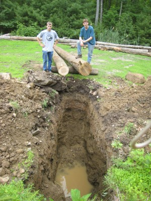
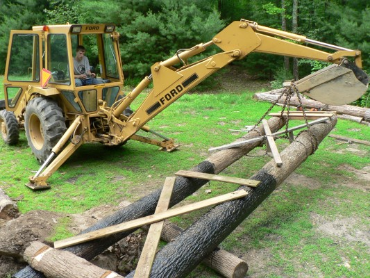
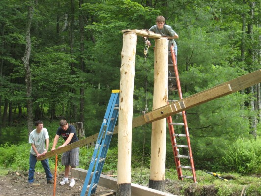
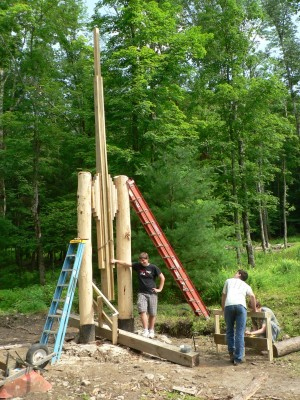
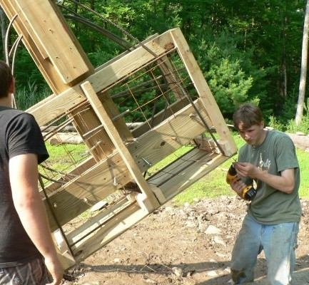
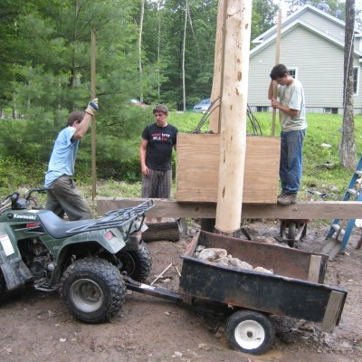
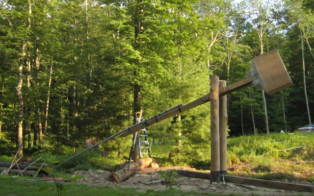
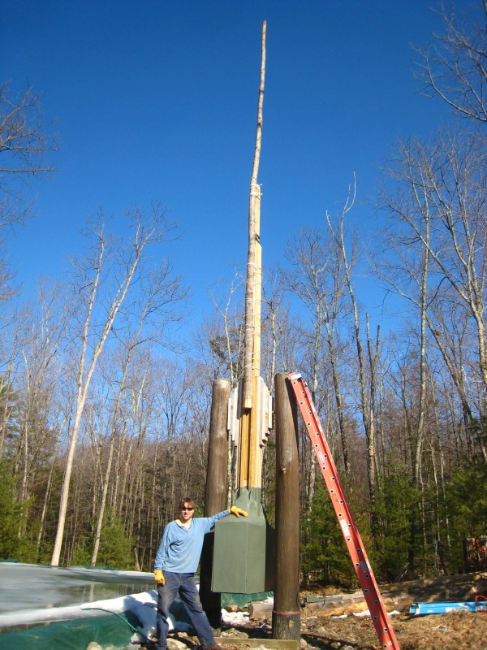
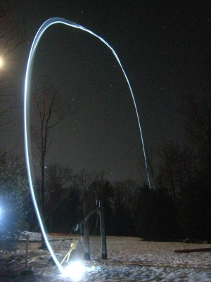
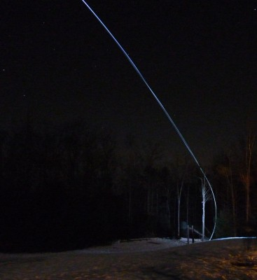

My friend borrowed his Dad's backhoe to dig the foundation (12 feet deep), and then manuever the two vertical supports into the hole. Each support is a 22 foot long oak log, which are connected underground with a truss.
|  |  |
With the vertical supports in the ground and stripped of bark, we then used a come-along to raise the main section of the arm into place. Once the arm was up, we connected it to the vertical supports using an axle made of steel pipe and filled with reinforced concrete.
|  |  |
Next came the construction of the counter-weight. It weighs approximately about a ton, and is a plywood box, filled with rocks, rebar, and concrete. Large bolts and rebar were embedded in the concrete to keep the counter-weight firmly attached to the arm.
|  |  |
As a final step, we attached the last section of the arm. Originally, we used a nested set of PVC pipes, but they were too flexible. Later we replaced them with an oak sapling, which worked much better. We pull-down the trebuchet using a set of pulleys that are connect to an electric winch that is off in the woods to the side of the trebuchet. The firing mechanism is a long string that is connected to big lever. Pulling the string causes the lever to fall under its own weight. As the lever nears the ground, it pulls the firing pin. This system allows the operators to be far from the trebuchet when it fires.
|  |  |
One night we set up the trebuchet to fire a gallon jug of water, in which we placed two small LED flashlights (themselves inside of a plastic bag). Using two cameras set on long-exposures, we managed to capture images of the trajectory that the projectile makes.
|  |  |